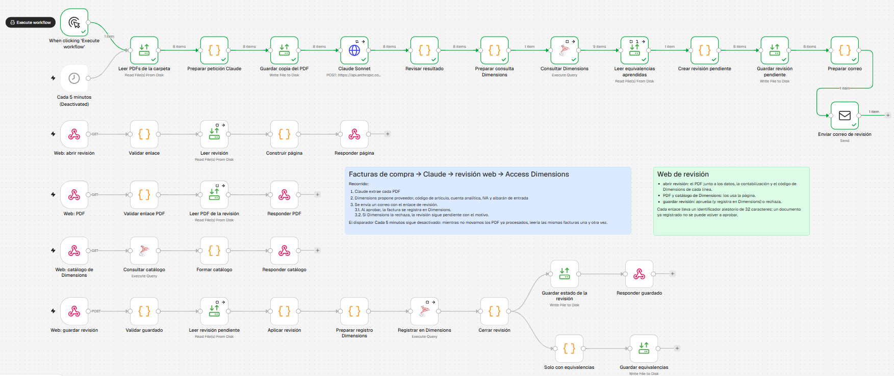
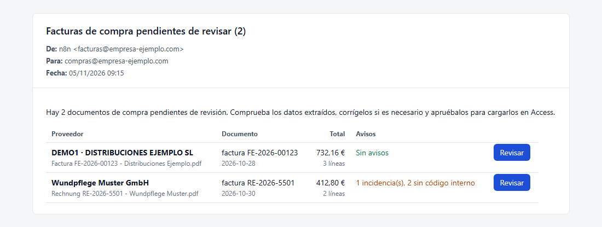
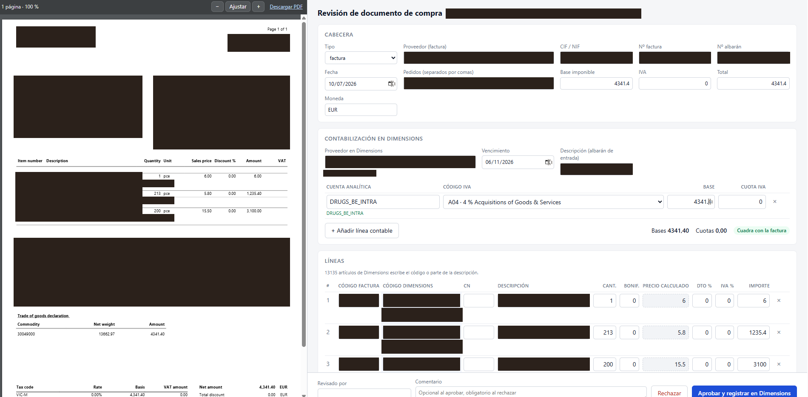

Flujo de n8n que convierte las facturas de compra en PDF en asientos dentro de Access Dimensions. La máquina hace el trabajo repetitivo: lee cada documento, extrae sus datos y los cruza con la base de datos. La persona solo revisa y aprueba.
Dónde empieza
Las facturas que queremos tratar se depositan en una carpeta: en un entorno profesional, una carpeta compartida del servidor; para uso individual, una carpeta local del equipo. El flujo la revisa automáticamente cada 5 minutos, y además tiene un disparador manual para lanzarlo a demanda mientras se hacen pruebas.
El flujo
Cada vez que se ejecuta, el recorrido es el mismo:
- Recogida: se leen los PDF de la carpeta y se guarda una copia de cada uno para la revisión.
- Extracción: cada documento pasa por la herramienta de OCR de Claude, que devuelve sus datos estructurados: cabecera, importes y líneas de artículos.
- Tratamiento: los datos extraídos se contrastan con la base de datos de Dimensions para proponer el proveedor, el código de cada artículo, la cuenta analítica, el código de IVA y el albarán de entrada.
- Aviso: se crea una revisión pendiente por documento y se envía un correo con todas ellas.

El correo de revisión
El correo llega a una cuenta personal o a un buzón compartido, según quién se encargue de las compras. Muestra cada documento pendiente con su total, el número de líneas y los avisos detectados, y un botón para revisarlo.

Revisión de cada factura
Desde el correo se accede a cada factura por separado. La página muestra el PDF original junto a los datos extraídos, ya contrastados con lo que tenemos en la base de datos: algunos campos no coinciden tal cual, como el código que el proveedor da a un artículo frente al nuestro, y la revisión propone la equivalencia.
Si el OCR no ha reconocido bien algún campo, se corrige a mano. Al editarlo se vuelve a consultar la información interna de la base de datos con el dato ya corregido, para que el resto de la contabilización se recalcule sobre el valor bueno.

Aprobación y registro
Para terminar, el operario indica su nombre en Revisado por y pulsa Aprobar y registrar en Dimensions. La factura se carga en la base de datos de Access Dimensions, queda marcada como realizada y aparece un mensaje de éxito. Una factura ya registrada no se puede volver a aprobar.
Si algo no es correcto, se puede rechazar indicando el motivo en el comentario.